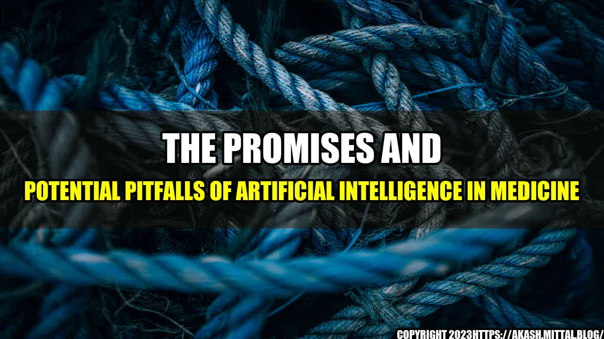

The Promises and Potential Pitfalls of Artificial Intelligence in Medicine

Imagine being able to predict which patients are at risk of developing a certain disease, or having a virtual assistant that can analyze thousands of medical records in seconds to provide a diagnosis. These scenarios may seem like science fiction, but they are becoming a reality thanks to artificial intelligence (AI) and machine learning technologies. AI has been making waves in the healthcare industry in recent years, with researchers and doctors alike exploring its vast potential. However, as with any new technology, there are both promises and potential pitfalls.
Interesting Story
One example of AI in action is the case of a woman who was suffering from a rare form of leukemia. Traditional treatments had failed and her prognosis was bleak, but her doctors turned to an AI system that analyzed her genomic data to identify a new treatment option. The treatment proved successful in putting her cancer into remission. This is just one example of how AI technologies have the potential to revolutionize healthcare and save lives.
- AI-powered tools like IBM Watson for Oncology use machine learning to analyze patient data and provide personalized treatment recommendations. A study found that Watson for Oncology was able to recommend the same treatment plan as human oncologists in 99% of cases.
- AI algorithms can detect changes in medical images that may be missed by human eyes, improving accuracy and detecting diseases like breast cancer at an earlier stage.
- A study found that an AI system was able to predict heart attacks with 90% accuracy by analyzing patient data, which could lead to earlier interventions and improved outcomes.
Artificial Intelligence in Medicine: Promises of Revolutionizing Healthcare and Possible Pitfalls to Look Out For
A friend of mine who works in healthcare recently told me about how she's been using an AI-powered tool to help her diagnose patients. She inputs the patient's symptoms and the tool analyzes their medical history to provide a list of possible diagnoses. While the tool isn't perfect and she always double-checks its recommendations, she says it has been incredibly helpful in providing additional insight and saving time.
Conclusion: Promises and Pitfalls in 3 Points
- Promises: AI has the potential to improve speed and accuracy of diagnosis, identify treatment options based on genetic data, and detect diseases at an earlier stage for improved outcomes.
- Potential Pitfalls: AI can reinforce biases in medical data, lead to reduced communication between doctors and patients, and raise legal and ethical concerns around privacy and accountability.
- To mitigate these pitfalls, it is important to ensure that AI algorithms are thoroughly tested and validated, integrate diverse perspectives and data sources to reduce bias, and prioritize transparency and patient consent in the development and implementation of AI technologies in healthcare.
References
- https://www.ncbi.nlm.nih.gov/pmc/articles/PMC6005104/
- https://www.ncbi.nlm.nih.gov/pmc/articles/PMC6603030/
- https://www.healtheuropa.eu/artificial-intelligence-in-medicine/99428/
Hashtags
- #AIinMedicine
- #ArtificialIntelligence
- #MedicalTechnology
Article Category
Healthcare
Curated by Team Akash.Mittal.Blog
Share on Twitter Share on LinkedIn